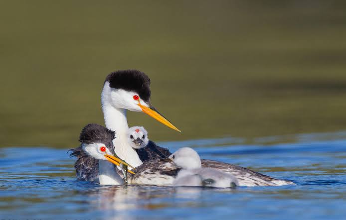

Grebes
Birds
Grebes are aquatic diving birds in the order Podicipediformes. Grebes are widely distributed birds of freshwater, with some species also occurring in marine habitats during migration and winter. The order contains a single family, the Podicipedidae, which includes 22 species in six extant genera.
Order: Podicipediformes; Fürbringer, 1888
Family: Podicipedidae; Bonaparte, 1831
Scientific name: Podicipedidae
Phylum: Chordata
Mass: Great crested grebe: 730 g, Little grebe: 170 g, MORE Encyclopedia of Life
Length: Pied-billed grebe: 30 – 38 cm, Horned grebe: 31 – 39 cm
Grebe, (order Podicipediformes), any member of an order of foot-propelled diving birds containing a single family, Podicipedidae, with about 20 species.
They are best known for the striking courtship displays of some species and for the silky plumage of the underparts, which formerly was much used in millinery.
The speed with which grebes can submerge has earned them such names as water-witch and helldiver, while the position of the feet near the tail is responsible for the early English name arsefoot, from which the family name was derived.
Adult grebes range in weight from less than 150 grams (5 ounces) to more than 1.4 kg (3 pounds) and in total length from 21 to 73 cm (8 to 29 inches). They vary principally in bill shape and ornamentation of the head.
The group is found on all of the continents and on many island groups as well; however, it is best represented in temperate regions. Seven species each are found in North and South America, five in Eurasia, and three each in Africa and Australia.
The species range from conspicuous and gregarious to solitary and skulking.
Adult grebes range in weight from less than 150 grams (5 ounces) to more than 1.4 kg (3 pounds) and in total length from 21 to 73 cm (8 to 29 inches). They vary principally in bill shape and ornamentation of the head.
The group is found on all of the continents and on many island groups as well; however, it is best represented in temperate regions.
Seven species each are found in North and South America, five in Eurasia, and three each in Africa and Australia. The species range from conspicuous and gregarious to solitary and skulking.
Biology of Grebe
Relationship with flamingos
Recent molecular studies have suggested a relation with flamingos while morphological evidence also strongly supports a relationship between flamingos and grebes.
They hold at least eleven morphological traits in common, which are not found in other birds. Many of these characteristics have been previously identified in flamingos, but not in grebes. The fossil Palaelodids can be considered evolutionarily, and ecologically, intermediate between flamingos and grebes.
For the grebe-flamingo clade, the taxon Mirandornithes ("miraculous birds" due to their extreme divergence and apomorphies) has been proposed. Alternatively, they could be placed in one order, with Phoenocopteriformes taking priority.
Fossil grebes
The fossil record of grebes is incomplete; there are no transitional forms between more conventional birds and the highly derived grebes known from fossils, or at least none that can be placed in the relationships of the group with any certainty.
[citation needed] The enigmatic waterbird genus Juncitarsus, however, may be close to a common ancestor of flamingos and grebes.
The Early Cretaceous (Berriasian, around 143 mya) genus Eurolimnornis from NW Romania was initially believed to be a grebe. If it is indeed related to this lineage, it must represent a most basal form, as it almost certainly predates any grebe-flamingo split.
On the other hand, the single bone fragment assigned to this taxon is not very diagnostic and may not be of a bird at all.
Telmatornis from the Navesink Formation – also Late Cretaceous – is traditionally allied with the Charadriiformes and/or Gruiformes.
However, a cladistic analysis of the forelimb skeleton found it highly similar to the great crested grebe and unlike the painted buttonquail (now known to be a basal charadriiform lineage), the black-necked stilt (a more advanced charadriiform), or
the limpkin (a member of the Grui suborder of Gruiformes), namely in that its dorsal condyle of the humerus was not angled at 20°–30° away from long axis of the humerus.
The analysis did not result in a phylogenetic pattern but rather grouped some birds with similar wing shapes together while others stood separate.
It is thus unknown whether this apparent similarity to grebes represents an evolutionary relationship, or whether Telmatornis simply had a wing similar to that of grebes and moved it like they do.